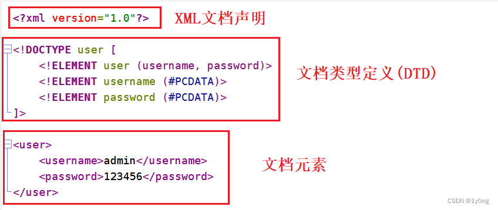
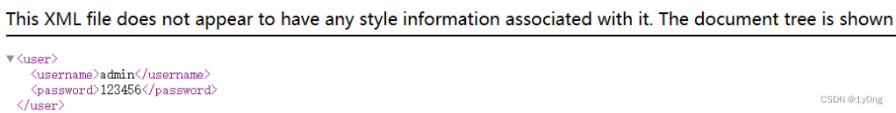
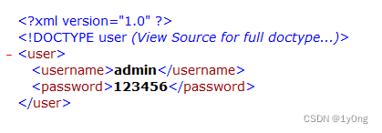
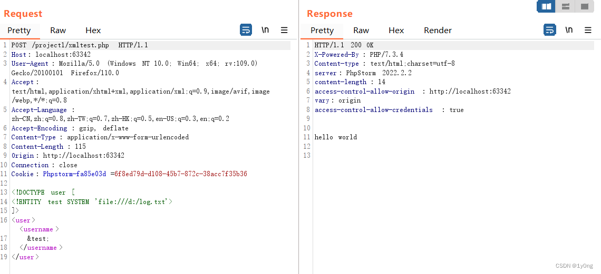

简介
XXE(XML External Entity Injection) XML外部实体注入,之前听这个词听过很多次了,但由于平日里不管是ctf比赛或者是src遇到的都不多,所以一直没有详细的了解过,趁着假期空闲,决定好好学一下这方面的知识。
XML一般可以用来做数据传输和数据存储,其传输功能和JSON类似,但现在基本使用JSON,很少使用XML,因为XML使用起来太“重”了,而外部实体引入是XML的一个正常功能,但如果在引入时,注入了恶意的外部实体,但本地对注入的外部实体未做严格校验,这时就会出现XXE漏洞。
XML基础
要明白XXE,我们可以首先从XML基础学起。
一个XML文档结构包括、XML声明、文档类型定义DTD（可选）、文档元素。
例如下面这一段就是标准的XML文档
1 |
|

通过DTD可以验证XML是否符合正确的语法规则 （DTD实际上类似一段说明文字,说明XML文档的组成元素及结构,如果这里将DTD中的username改为name,打开XML文档并不会报错,只是不符合DTD中定义的语法规则）,DTD可以本地声明,也可以外部引用,而XXE主要就是从DTD入手。
DTD实体
实体是用于定义引用普通文本或特殊字符的快捷方式的变量,可在内部或外部进行声明。
实体包括一般实体和参数实体,为防止大家被绕晕,这里我们只讲一般实体。
一般实体声明方式：<!ENTITY 名字 '内容'>
使用方式：&名字;
例如：
1 |
|
在浏览器中打开

而外部实体声明方式为： <!ENTITY 名字 SYSTEM "URI/URL">
例如：
1 |
|
admin.txt中的内容如下

在IE8浏览器(其他浏览器显示不出来)中打开

同时在引用外部实体时,可以使用不同的协议类型来引用 ：
1 | file:///path/file.txt |
聪明的你们一定已经发现了,只要将admin.txt换成其他文件,就可以实现文件的任意读取了
无回显的xxe
当服务端无回显时，可以通过远程加载dtd的方式读取文件
1 |
|
1 | <? 1.dtd ?> |
PHP中的XML
php中常见的与XML有关的函数是 simplexml_load_string
其用法为 simplexml_load_file(string,class,options,ns,is_prefix)
| 参数 | 描述 |
|---|---|
| string | 必需。规定要使用的 XML 字符串。 |
| class | 可选。规定新对象的 class。 |
| options | 可选。规定附加的 Libxml 参数。 |
| ns | 可选。 |
| is_prefix | 可选。 |
一个简单的例子
1 |
|
利用XXE读取log.txt的内容

防御
XXE的防御一般通过两种方式
1.使用开发语言提供的禁用外部实体的方法, 例如php中使用libxml_disable_entity_loader(true)
2.对用户输入的内容进行过滤,过滤掉<!DOCTYPE和<!ENTITY,或者SYSTEM和PUBLIC。